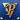
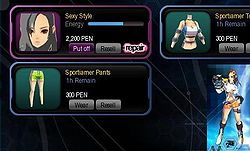
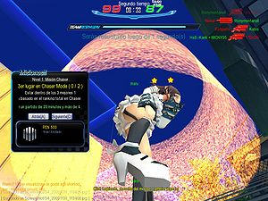

S4 League
 De: La Frikipedia, la enciclopedia extremadamente seria.
De: La Frikipedia, la enciclopedia extremadamente seria.
De la serie Videojuegos:
S4 League

Idéntico al logo de un Bucati...
| Desarrollado por:
|
Un grupo de Chinos Koreanos en Penetravision.
|
| Distribuido por:
|
Pmang (Se inventan nombres más raros...), Alamierda Alaplaya y Alamierdacontuplaya.
|
| Diseñado por:
|
El Monstruo del Espagueti Volador.
|
| Motor
|
Lag-a-Mogollón (un 8 valvulas)
|
| Género(s)
|
¡MUERE NOOB SPAMMER! ¡RATATATATATATATATA! y esas cosas.
|
| Fecha de lanzamiento:
|
De corner.
|
| Modos de juego:
|
Llevar la bola a la base del oponente (la bola es una C4), matar a todos al mas puro estilo Rambo y matar a todos junto a un amasijo oseo anarcopunk... o tu y los demas propinarle una paliza al esqueleto violador.
|
| Requisitos:
|
Una PC con Interné, y llevarse bien con los japoneses y los Otakus, pero sobre todo llevarse bien con el lag.
|
| Disponible en:
|
Cocheras y trasteros
|
| Formatos:
|
JPEG y GIF. PNG no está disponible hasta el próximo parche.
|
| Edades:
|
De niños entre 2 a 99 años.
|
| Puntuaciones:
|
7.5/10 en la escala del juego con más noobs. 100/10 en la escala de juego con mas lag.
|
{{{notas}}}
S4 League es un videojuego creado por unos frikis aburridos de un país que no recuerdo, en la empresa Penetravision. Es un juego de categoría de disparos, o sea, Ratatatatatata, Piun Piun, Bang! y Piñau Piñau, ¿No os habéis leido el Infobox?
El juego está en tercera persona, o sea, él. Las 4 S vienen de Sexo Sexo Sexo Semen. Pero lo han escondido bajo Stylish, eSper, Shootings, Sports, Aunque se nota que es escondido, solo basta ver la segunda palabra...
Básicamente el juego consta de un tipo de fusión de GunZ (PistolitaZ o EspaditaZ para los amigos) y Counter Straic. Solo que aquí se hacen muchas pajas acrobacias locas y se puede personalizar al personaje con Ropas, Armas y Poderes (3 cosas que no necesitas, pero que no pararas de comprar). Pero luego te das cuenta de que todo el dinero que gastaste en ropa te ha hecho quedarte sin PEN (Dinero del juego) y solo te durara de 1 a 30 dias (afortunadamente, de 1 a 30 dias dejaras de jugar a esta abominacion de juego). Puedes conseguir AP, que es dinero normal, para comprar cosas Pentagigacruelicamente inutiles o cambiarlo por más PEN. No preguntéis por que el PEN se llama PEN, de seguro se le habrá ocurrido el nombre a algún chino que se pajeaba mientras miraba a las chicas del juego jugar.
Este juego es ideal para muchas personas, suele haber tanto millones de chicos como miles de travestidos chicas (Con ropas escasas y provocativas,que empalmaran a mas de un enfermo mental...), una cachomierda amplia selección de escenarios y armas, etc. Todo para que disfruten una buena estancia mientras caminan (aunque caminar sea lo menos probable), se corren, saltan, más etc. Disparandose, golpeandose, apaleandose, y mucho más etc., para acabar muriendose y cabreados hasta el máximo que aguanta su cerebro y descargarlo en la vida real.
Se ha comprobado que llegar al lvl máximo (S4- Lvl 100) Cuenta como 1 año si no haces nada más que jugar. Si haces cosas como ir a clases, ducharte, comer, dormir, y aún más etc. tardarás 10 años. Y lo peor es que para unirte a la mayoría de los clanes tienes que empezar otra cuenta desde level 1 solo para agregar una míseras letras... Para que luego te expulsen del clan por viciao o por envidia, o simplemente por que eres un inútil y no quieren inútiles. Y tengas que volver a tu cuenta normal, sabiendo que todos tus amigos ahora te pasan en nivel. (Que deprimente...)
Noticia Importante
Se ha desvelado que algunos jugadores del juego podrían ser Worms (Posiblemente Haruhiistas) o jugadores de Counter-Strike en recuperación. Así que ve con cuidado, no estamos seguros de que sea seguro jugar con estos jugadores, ya que tienden a usar Cheats y a hablar como Noobs. O directamente no hablar (¡Los gusanos no tienen dedos!). Así que andate con ojo, Quién avisa no es traidor (Es avisador).
Cómo jugar (Paso a Paso. Pie a Pie.)
Primero, luego de las 3 horas de ansiedad por la descarga del juego, las 27 horas de "Agregando los parches" Y las 2 horas de "Cargando". Te viene el cartelito de "Ingresar nombre de usuario y contraseña". Por lo que te quedas:
- O.oU si eres Otaku.

Yamcha ha jugado al S4 League. Y por su mirada cabe decir que ha ganado muchas partidas... Jugando con profesionales contra Noobs.
- WTF?! si eres Friki.
- Qué la cogida Si eres el Traductor de Gúguel.
Nota: Google fuma mucho porro.
Así que el siguiente paso es ir directo a la página principal del juego y Registrarte. Siguiendo todos los pasos que esta te diga, en total eso llevará... una hora.
El próximo paso es entrar al juego. Que si no te ha dado ningún error podrás entrar fácilmente. Si te da algún error... Es tu problema, chaval. Si tienes un error puede tardar incontables horas poder arreglarlo.
Al entrar al juego tienes que elegir tu Server de los siguientes:
- Inglés (¿Que porque tienen server propio? Eso solo lo sabe él. Y quizás lo sepa Yo)
- Alemán (Para tener server propio habrán usado su herencia genética Nazi...)
- Francés (Estos para tener server propio han pagado...)
- Español, Italiano, Turco. (Sí, a nosotros nos discriminan y nos meten con los fans del espaghetti y los vikingos)
- (Pocos de su pais se meten y se van a molestar a otros servers, un desperdicio para alaplaya)
Luego, crearte el personaje. Donde decidirás cosas como tu Ropa Estándar, Si eres feo o no, si tienes tendencias bi o no, De que color tienes el cabello, y sí, mucho más etc. Esto tardará unos minutos apenas. (Como hay tan poco de lo que elegir...)
Paso siguiente: Elegir... eh... como se llamen. Hay 5 tipos especiales: Rookie, Super Rookie, Semi Pro, Free, Free2, Free3 y Free4. (Quitaron Pro, jodieron a los pro y ahora se tienen que conformar matando n00bs que van al Free y semi pros, además, tuvieron que hacer más Frees por exceso de players hackers y gente sin vida), todos separados en 2 categorías: Speed y Normal. Pero en el Normal no hay nada, solo está Nadie, así que no te lo recomiendo. Tú, como acabas de empezar, irás al Rookie, a elegir sala y eso para subir de nivel y así llegar a poder entrar a Super Rookie y los siguientes. O si tienes huevos Que dudo de ello, irás directo al Free o al Free2 con los mejores jugadores a ver que te espera. (Una muerte segura, creo)
En total: Durarás 33 Horas y unos minutos (Más las incontables horas opcionales por los errores) en poder entrar al juego, para jugar partidillas de menos de 30 Mins.
Armas
Muchas armas distintas haber para elegir, pero te describen, así que presta atencion y cuidado al elegir.
- Rail Gun: Un arma que dispara
consoladores rayos ultra concentrados, que de un tiro te dejan gilipollas, si ya lo eras, te matan. Solo lo usan los cobardes, snipers y campers (Véase, los que te los tienes que follar para que entiendan).
- Mind Shock: Un rayo morado, que afecta a la mente, arma no válida contra n00bs y tontos... Para gays, ya que atraviesa las paredes y los escudos, y tiene ese colorcito tan gay... Todo n00b tiene una.
- Submachine Gun: El arma básica, no es muy potente pero tampoco es mala, es normalita. Son dos pistolas subnormales. De ahí el prefijo "Sub".
- Sentry Gun: No es un arma del todo, es una maquinita que dispara donde la pongas. Las Sentry-fílicos tienen muchas de estas y en distintos colores. Ten cuidado, las Sentry Gun se excitan fácil y disparan duro.
- Senty Nell: "Nelly" para los amigos, es la hermana del Sentry Gun, al acercarte cree que le vas a violar, así que te aturde y te lanza por los aires de una bofetada. ¡Zas en toda la boca!
- Plasma Sword: Una espada estilo Cloud, para que te sientas como un rey teniendo la más grande (NO PENSÉIS MAL) Y cortando las otras (Ahora si). Si tienes un complejo, tuya es.
- Counter Sword: Con esta puedes hacer un shoryuken y lanzar al otro por los aires. Tambien puedes lanzarte y
violarlos darles un puñetazo aéreo que enlazado con el otro ataque te quita un huevo.
- Twin blade: Son dos espaditas baratas que usan noobs para lamear y hacen que tires la PC por la ventana... son los hijos de la plasma sword y la dager... (Nadie sabe como se han reproducido pero es así).
- Sigma Sword: Con esta viga de hierro podrás transformarte en
falete justo antes de un buffet libre algo como goku y pegaras ostias como Bad Spencer y follarte media sala de una puta ostia reventarle el ojete a cada jugador, esta arma suele ser usada por el Spammer y puede provocar que tomes un viaje a las oficinas de Pentavision y gasifiques a cada uno de los programadores del juego.
- Paragüave Gun: Es algo asi como un consolador gigante, se abre como un paraguas al disparar, utilizada por ultra-noobs en su fase de prueba, el arma en si no mata ni a un chotacabras, mueve un poco a la gente del sitio eso si, para disimular el efecto. Eliminada del juego tras su fase de prueba por no tener arreglo, cada vez que alguien te dispara con esto, produce un ROFLMAO instantaneo. Según parece es hija de la Rail Gun, de la Canon Ade y de la Burst Shotdick (si tiene tres padres no pregunteis como).
- Air-gun: Es una especia de escopeta que dispara aire super mega giga a presión y te puede reventar la cabeza incluso más que un cani escuchando regayton, tiene un alcance penoso y no vale ni pa conta chistes.
- Bate: Un bate que tira
semen rayos al golpear, bastante fuerte, con esto, podras violar al intante metiendoles el bate por el culo podras evitar un Touch Down facilmente. Va bien combinado con el combinado de ropa de Jugador de Baseball. (Sí, hay combinados de ropa, ¿Por qué crees si no que hay tantas chicas en el juego?)
- Daga/Dagger: Arma ultra-definitiva utilizada por todos los ``noobs´´ (en caso de que un noob coja la daga, date por muerto amigo) ya que matan aunque estes a 10 metros de distancia y tengas un seguro de vida en Mapfre. Y esto solo si estas de suerte ya que estas puedan matar de un solo golpe (mayormente golpes que se dan por la espalda por
bujarras noobs de los que dan mucho por culo).
- Smash Rifle: Un arma con un huevo de municion, pero con menos fuerza que el pedo de un marica, pero si te meten una ostia con esto te dejan flaco de una ostia.
- Revolver: Un revolver, ¿Que misterio tiene eso?
- Gauss Rifle: El clasico arma para creerte un soldado espacial de Warhammer, como una metrallera normal y corriente.
- Burst Shotdick: Una escopeta que utilizó el abuelo de Heidi para cazar conejos y vacas,pero 1 día los frikis que crearon S4 fueron a su casa y se la robaron.
- Hand Gun: Es una pistolita barata de fuego rápido... Aunque no lo parezca,está compuesta por complejas balas,que dentro hay wombats que te absorben el cerebro y cosas parecidas.
- Heavy Put Machine: Es una arma lenta,tanto como tú leyendo,dispara chorroscientas mil balas por segundo y dispone de una bolsa donde se pueden guardar 100 cajas,en esta arma se pueden acomodar petardos y voladores,por eso para navidad se compra mucho.
- Canon Ade: Es una arma para cobardes,lloricas y gente con mala puntería,es como la rail gun,sólo que en vez de disparar rayos ultra concentrados,dispara bolas ultra concentradas,perfecta para los canis,que van en grupo.
- Mind Energy: Es como la Mind Shock,sólo que esta recupera la salud mental,esta arma la suelen usar los psicólogos. Mind Shock es su hermano,sólo que el Mind Shock fue al infierno y ahí aprendió a hacer daño en el cerebro,en cambio,la mind energy fue a un centro psiquiátrico y aprendió el secreto de los tranquilizantes.
Jugadores
Sí, ¿Qué es un juego online sin jugadores? Pues... es un juego online... pero... sin jugadores. Pero eso no viene al caso. En el S4 League te puedes encontrar muchos jugadores. En esta lista te daremos por culo la clase de jugadores que hay en S4 League... o la mayoría:
- El n00b: Una maldición, está destinado a morir a manos de cualquiera que pase, incluso con Friendly Fire (Que conste que no hay de eso en el juego). Si tienes uno en tu equipo, te lo aseguro, tienes esta partida perdida. Y perderás dos puntos en AUTOESTIMA. Aunque tamién el noob puede ser una puta máquina por
joderse a todo el mundo matar mas que terminator. Se llevan el apelativo de noob por envidia y por no dejar jugar a nadie (dar mucho por culo).
- El lagger: Ese que nunca falta. Es un usuario que tú lo ves corriendo en el mismo lugar que está, o haciendo Moonwalk. Que no importa cuanto le dispares, o cuantos críticos a la cabeza le hagas, no se va a morir. ¿Qué hacer? Hasta ahora no se conoce solución. El lag no es una enfermedad, es una maldición. No importa si compras mejor internet o algo así, el lag sigue. Probablemente los laggers están descargando pr0n o dejaron el Mésenller abierto, por eso el lag. Si tu juego se queda parado o se ralentiza el PC, Tienes un lagger en tu partida. O peor, Tú eres el lagger.
- El pro:  Sí, ese jugador que todos detestan. Es un tío que sale de la nada, con esa P dorada en el fondo azul. (La P de
Puto Professional) Entra a tu partida y se carga a todos los del equipo rival. Apenas acaben los 5 segundos para revivir, ya te verás esperando otros 5 segundos sin siquiera presionar una tecla antes que te mate. Son todos Worms Haruhiistas o esos jugadores del Counter en recuperación, ten cuidado. Él puede matarte estando en la sala de espera, mientras usas un escudo, siendo del mismo equipo, en el lobby o incluso sin estar en el juego.
- El Jugador AP: conocido por los pobres como "A-Pesta", es el tipo de jugador que gasta toda su fortuna en el juego, llegando a tener la mejor ropa y armas, envidiado por todos y enamorado por mucho, es criticado por ser rico y regularmente juega bien, en otras palabras el típico modelo a seguir que s4 quiere que seamos.
- El Spammer: Es el tío que se une con su bonita Counter Sword y empieza a matar a todo el mundo a ostias,su técnica es así:
Click izquierdo,click izquierdo,click izquierdo,click izquierdo,click izquierdo,click izquierdo,espero 7 segundos porque me mataron...
- 7 Segundos más tarde* Flecha arriba,flecha izquierda,click izquierdo,barra espaciadora,click izquierdo,click izquierdo... ETC.
- La "Chica Sexy": Raramente aparece, es una chica de escasas ropas y con una cara (Comprada por 10000 PEN) extremadamente moe.
 Típica vestimenta de una Chica Sexy en S4 League.
 Chica Sexy en acción, hemos censurado todo para ustedes, Frikipedistas jovenes, no vean cosas indebidas. (Sí, la screen la saqué
yo. ^w^)
- El "Chico Sexy": Lo mismo que la Chica Sexy, pero en hombre. Las chicas de tu equipo caerán rendidas ante él, su cara de niño bueno y sus pectorales marcados. (¬_¬)
- El Charlatarantatatarantatán: Es un jugador que se conecta al juego a poner puros "xD". Mientras juega, habla. En el Lobby, habla. En la Sala de Espera, habla. ¿Cómo callarlos? Es imposible, pero meterles unos buenos espadazos o unos disparos en la cabeza verás como empieza a hablar mal y al fin se mueve.
- El Anchorero: Véase, es una persona que usa el Skill Anchor y come muchas anchoas. Todos lo odian y es odiado por todos. Es un profesional en los Touch Down. Tener un Anchorero en tu equipo es bueno, en el contrario, muy malo. Lo odiarás también y jurarás matar a todo Anchorero que veas. Sin embargo, puede que te compres un Anchor y te guste, entonces pasarás a ser Anchorero... pero serás feliz.
- El Sentry-Fílico: Este jugador es bastante fome con las armas de fuego y con las armas Cuerpo a Cuerpo. ¿Cómo gana? Se gana la vida dejando sus Sentry Guns por los sitios más estratégicos del mapa. Si hay muchos Sentry-Fílicos en un equipo, ten en cuenta que son letales. Y más si tienen la Skill de Escudo, ya que protegen a sus Sentry Guns. Se dice que por las noches, los Sentry-Fílicos dejan un Sentry en un lugar oscuro y van con ellos, y hacen "ruiditos" juntos. Es por eso el nombre.
- El sniper: No hace falta explicación. Es alguien con un Rail Gun, posiblemente el Skill de Alas o de Invisibilidad. Te joderá toda la partida. Al dispararte te convertirá en Gilipollas, y si ya lo eras, morirás al instante, por gilipollas.
- Los cultos: Véase, jugadores que van sala por sala preguntando si alguien habla su idioma, es normal ver a un Italiano apenas al entrar diciendo: "Ita?" Y si nadie responde, se va.
- The Chaser: Es un jugador que en una partida de Chaser, ha sido elegido el más bonito y por eso un Esqueleto volador excitado le coge la cabeza. El jugador Chaser debe matar a los demás para poder tener privacidad con el Esqueleto ese y hacer sus cosas...
- El Hack: El tipico tramposo, embustero, estafador, fullero, tahúr, sablista, petardista, embaucador, farsante, chantajista. matalo o banealo o probocalo y veras de que es capas ¬¬...
- El Crayer: O "Crayium"; es el tipico jugador con caracteristica de ama de llaves en noche de telenovelas, le encanta llorar, y todo le molesta. Su palabra favorita es regularmente "Noob", agregándola como sufijo a todo.
- El AFK: asi es, "A Fockearlos Kulos", no es mas que un jugador que ama no jugar, y se siente atraido por cualquier otra cosa
porno a la hora del juego, regularmente es odiado por todos excepto por los chasers, estos los aman.
- El/La Forevealone: Raramente "la", pero aun asi son jugadores que consideran de S4 como un 12 corazones, buscan amor
sexo virtual. Normalmente coquetean a los jugadores AP o a los PRO: Al final sus ataques no son muy eficaces pokemon.
- Los Novios: Parejas normalmente en la vida real, que siente que su relacion debe ser mostrada al mundo
no tienen cámara para hacer porno y deciden entrar a s4 a demostrar su amor, jugando en partidas y diciendo cosas bonitas violame! durante la partida.
Modos de Juego
En el juego hay 4 modos de juego para divertirte, son divertidos, muy divertidos. Se los recomiendo mucho y... ¿Qué dice aquí? Ah, sí. Juega sin quejarte de nada, y los Administradores son benévolos... ahora quítame la pistola de la cabeza.
- Death Match: Véase, mucha gente saltando y escondiéndose. Todos disparándose entre ellos y intentando matarse. Es el modo que menos atrae a la gente y menos salas hay dedicadas a ellas. ¡Salvemos los Death Matches!
- Touch Down: Literalmente, Tocar Abajo. Se trata de que hay que llevar un tipo de pelota, sí, como las que tengo abajo, (En realidad es una C4 en forma de cosa, llamada Furby) a la base enemiga para hacerla explotar y ganar un punto. Pero esa bomba es también una potente droga y al tenerla va disminuyendo tu energía, lo que hace que no puedas usar skills ni saltar, ni correr
te. ¿Qué hacer? Pues puedes ir abriéndote paso hasta la meta a lo Gordon Freeman o confiar en tu equipo para que te proteja... pero yo en esos subnormales no me fío.
- Chaser: Un esqueleto punk-cani v
iolador excitado elegirá un jugador de los que ya hay, entonces le cogerá de la cabeza para un poco de sexo oral. Pero el esqueleto ese quiere privacidad, así que envía al jugador elegido a matar a los otros jugadores. Ese jugador obtiene una cantidad gigantesca de energía y un daño increiblemente alto. (Se dice que tus armas se transforman en Pollaesquelética). Los otros jugadores mientras tanto, pueden atacar al esqueleto o al jugador, en un intento suicida. Intentar romper el piso para que caiga, o huir y esperar a que pase el tiempo para que el esqueleto pierda la excitación. El que más sobreviva va ganando puntos, y el que más dispare también. El que al final tenga más puntos gana. Pero algo no visto en cámaras es que al final el Esqueleto se monta una orgía con todos. También en vez de un esqueleto puede salir una niña medio emo sentada en un globo verde con forma de algo, una chica emo con ropas escasas, que está buena o un tipo de cosa. Ellos son los principales buscadores de víctimas para el Esqueleto... o su reemplazo cuando el esqueleto quiere hacer cosas fuera de cámara.
- Battle Royal: Es como el Death Match,pero en vez de ser por equipos organizados (Véase:mafia) es todos vs todos.
- Captain: Como un Death Match, solo que aqui algún incompetente os ha puesto a ti y a tus compañeros de capitanes con chorrecientos de vida (600, por regla general), y tienes que asesinar a los otros capitanes (aun mas incompentes que tu) para ganar. Si mueres y aun quedan capitanes de ambos bandos en pié, volveras a aparecer con 100 miseros puntos de vida, frentre a los tropecientos de los capitanes enemigos (vamos, que vas a durar menos que un chino en la NBA). Por ahora el unico mapa que hay es la fabrica de chocolate de Willy
apestoso Wonka.
- Siege Mode: O "Modo asiento" por si traducción, es un juego típico de capturar banderas
si hubiera, en el cual debes capturar una base quedándote sentado sin hacer nada, y esperando a que llegue alguien mas y te chingue, en total son 3 banderas a tomar, y lo cual lleva un tiempo de 10 seg. 1 hora en tiempo s4, para que al final te maten y tomen lo que te acabas de robar.
- Arcade Mode: muy popular entre los hacks, noobs, e historiadores de américa, consta de tres modalidades de las cuales solo una se juega actualmente (¡con hack, claro esta!), posiblemente es la única modalidad donde los hacks son amados, ya que pasarlo por si solo es chingarte a ti mismo con tu propia daga. Al final recibes una capsula, eso si lo completas.
PD: Los que juegan en el BR antes eran unas mafias bien organizadas y distribuidas,pero la droga no llegaba y empezaron a trabajar cada uno por su lado,pero luego se descubrió muchos cargamentos de droga en Galleon y otra planta química que no pongo el nombre porque no me sale de los huevos da la gana.
Fumbi

¡Que no, ese no es Fumbi!
Luego de su despido para el 2013por trafico de drogas, transportado por jugadores, se contrato a una chica llamada "Alice", cuyo baile ya no es llamado gay porque es chica, pero si al acto en si.
Enlaces Externos
La página oficial del juego ¿Está bonita verdaaaa? Si te dio asco o solo miraste los pechos de la chica del vídeo, bienvenido al club.
El juego según la entidad más malvada de todo el universo, el mal reencarnado en organización.
|
|
 Shooter Shooter
 Terror Terror
 Velocidad Velocidad
 Rol Rol
 Estrategia Estrategia
 Aventuras Aventuras
 Fight! Fight!
 Clásicos Clásicos
 Deportivos Deportivos
 Aventura gráfica Aventura gráfica
 Novela visual Novela visual
 Personajes de videojuegos Personajes de videojuegos
|
Autor(es):
- Dark temptation
- Kablo
- Bladguer
- Skyorz
- Mildevar
- Gñapero Solitario
- 7744
- Kike66
- Genericool
- CrisJavi.rm
Frikipedia 2005-2016, Licencia
GFDL 1.2 - Extraído por FrikiLeaks